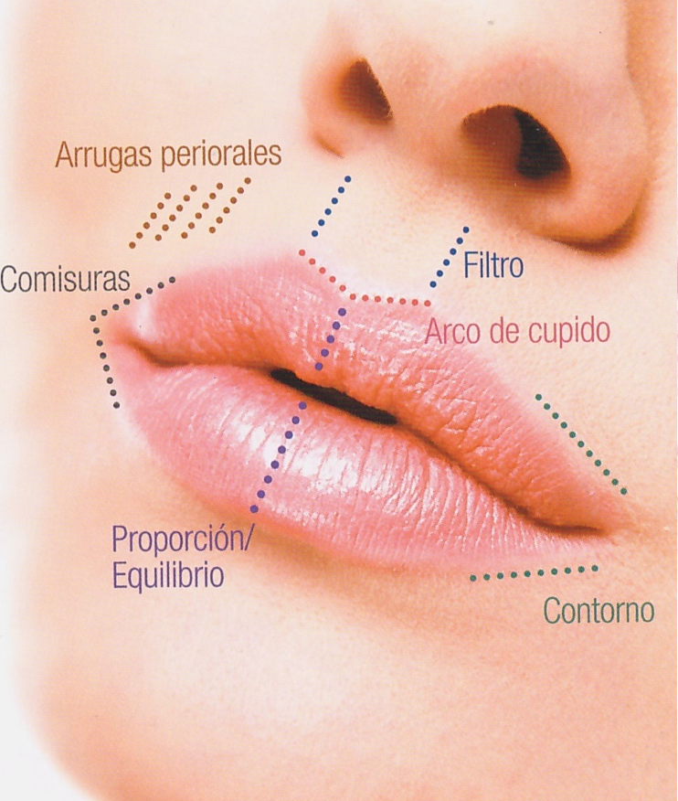
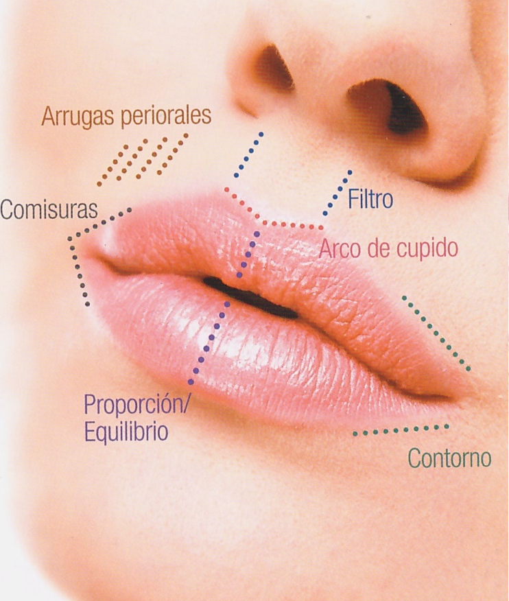

Innovare Spa
Clínica Innovare PB
Av. Verona 7412
Col. Villa Verona
Zapopan, Jalisco, Mexico 45019
Otorrinolaringólogo certificado por la Sociedad Mexicana de Otorrinolangologìa de Cabeza y Cuello con 26 años de trayectoria en cirugías funcionales y estéticas de naríz, y experta en Tratamientos estéticos avanzados y tratamientos con aparatologia corporales y faciales
Mi promesa
PARA TI
“Mi principal preocupación es tu salud. Soy una doctora que presta extréma atención al detalle. Mi objetivo, es hacerte la mejor version de ti mismo.”